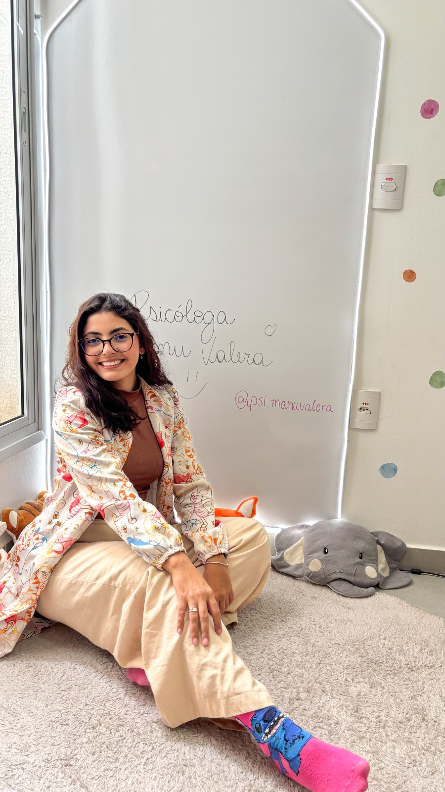
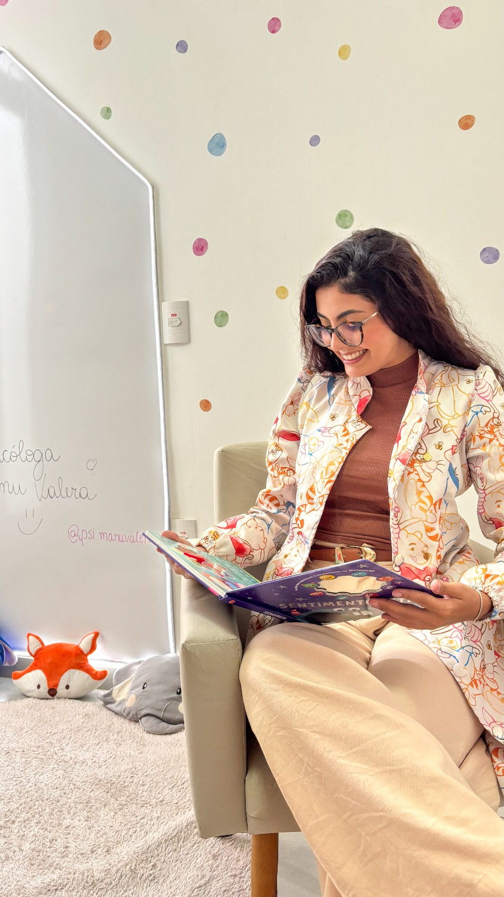
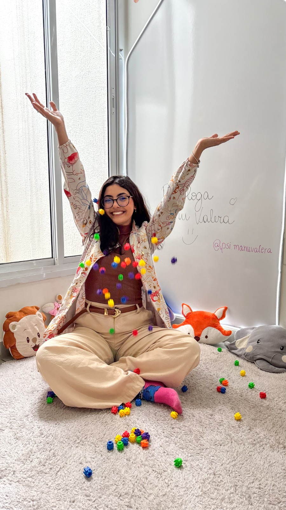

Psicologia infantil
Acompanhamento focado no desenvolvimento emocional, social e comportamental de crianças e adolescentes.
Com escuta atenta, ciência e parceria com a família, acompanho crianças e adolescentes em seus próprios caminhos de desenvolvimento.

Quando a criança ainda não consegue explicar
Mudanças na rotina, nas emoções, no comportamento ou nas relações podem ser formas de mostrar que algo não vai bem.
O acompanhamento psicológico ajuda a compreender esses sinais com contexto, técnica e sensibilidade. O processo começa pela escuta dos responsáveis e pelo encontro respeitoso com a criança — sem fórmulas prontas e sem reduzir sua história a um diagnóstico.
Aprender também pode ser brincar
No universo infantil, o brincar abre possibilidades de expressão, vínculo e aprendizagem. Cada recurso ganha sentido quando parte das necessidades da criança.
Como posso ajudar
Atendimentos planejados a partir das necessidades da criança e da família.
Acompanhamento focado no desenvolvimento emocional, social e comportamental de crianças e adolescentes.
Estratégias baseadas na Análise do Comportamento Aplicada, definidas de forma individualizada.
Acompanhamento especializado, respeitando singularidades, formas de comunicação e necessidades de suporte.
Escuta e orientação para que pais e cuidadores compreendam desafios e participem do processo terapêutico.

Sobre a Manu
Sou psicóloga infantil, formada pela Universidade Federal do Triângulo Mineiro (UFTM) e pós-graduanda em ABA e autismo.
Atuo com crianças e adolescentes de 2 a 16 anos, oferecendo acompanhamento individualizado e orientação às famílias, sempre respeitando as necessidades e singularidades de cada criança.
Como funciona
O processo começa com uma conversa e se adapta ao que faz sentido para a criança e para sua família.
Você chama pelo WhatsApp e conta brevemente o que motivou a busca por acompanhamento.
Um momento para compreender a história, o contexto familiar e as principais necessidades.
Os próximos passos são definidos de maneira individualizada, com objetivos possíveis e alinhados.
Os encontros e as orientações à família seguem o planejamento e a evolução observada.
Buscar acompanhamento também é uma forma de cuidado.
Dúvidas frequentes
Se sua dúvida não estiver aqui, pode chamar pelo WhatsApp.
O acompanhamento é destinado a crianças e adolescentes de 2 a 16 anos.
As duas modalidades são possíveis. A escolha é conversada com a família, conforme a possibilidade e o que for adequado para a criança.
Não. A família pode buscar orientação diante de dúvidas sobre desenvolvimento, emoções ou comportamento, mesmo sem um diagnóstico.
Os horários são combinados diretamente com a Manu, conforme disponibilidade.
Na Rua Machado de Assis, 1127, bairro Lídice, em Uberlândia — MG.

Vamos conversar?
Conte um pouco sobre o que sua família está vivendo. O primeiro contato é um espaço para entender se e como posso ajudar.
Chamar no WhatsApp